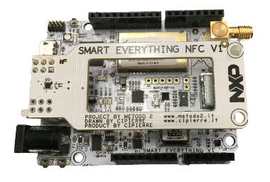

Descripcion
Las tarjetas de desarrollo son plataformas electrónicas diseñadas para facilitar la creación, programación y experimentación de proyectos tecnológicos. Incorporan microcontroladores, procesadores y diferentes interfaces de conexión que permiten integrar sensores, módulos y dispositivos electrónicos para desarrollar aplicaciones de automatización, robótica, domótica, Internet de las Cosas (IoT) y sistemas inteligentes.

Detalles
Entre sus principales características y aplicaciones se destacan: Programación y control. Conectividad. Integración de sensores. Automatización. Robótica. Internet de las Cosas (IoT).
Modelos de tarjetas de desarrollo
- Arduino
- ESP32
- RaspberryPi
- STEM32